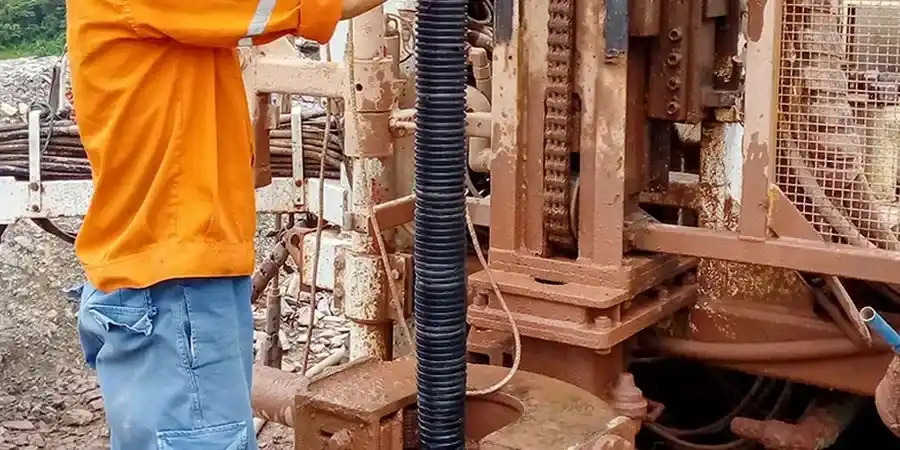

En Valencia, ofrecemos servicios integrales de geotecnia adaptados a las condiciones únicas de la región. Nuestra experiencia abarca desde la caracterización del subsuelo y el diseño de cimentaciones hasta el cumplimiento normativo y la monitorización de obras. Realizamos campañas de reconocimiento con equipos calibrados y ensayos de laboratorio, garantizando informes técnicos conforme a la normativa vigente. Colaboramos estrechamente con autoridades locales y contratistas para optimizar cada proyecto, ya sea en la costa, el casco urbano o el interior. Para conocer más sobre nuestras metodologías, visite nuestra página sobre calicatas exploratorias y permeabilidad en campo.
